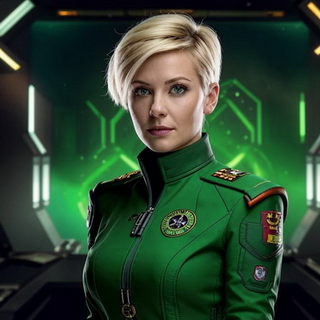

Элиана Нордстром
e-mail: eliana.nordstrom@starfleet25.com
Дата рождения: 12 марта 2412 года
Город: Стокгольм (Земля, Швеция)
e-mail: eliana.nordstrom@starfleet25.com
Дата рождения: 12 марта 2412 года
Город: Стокгольм (Земля, Швеция)
Капитан космического корабля
Элиана — решительная и уверенная в себе женщина, обладающая природной харизмой и лидерскими качествами. Она всегда находит баланс между строгим командованием и заботой о своём экипаже. Обладает остроумием и способностью быстро принимать решения в стрессовых ситуациях. Высокая и стройная, с короткими светлыми волосами и проницательными зелеными глазами. Всегда носит аккуратную форму, подчеркивающую её статус капитана.
e-mail: stanislav.ivanov@starfleet25.com
Дата рождения: 23 августа 2405 года
Город: Полюс-5 (Титан, колония "Русский След")
Главный инженер космического корабля
Станислав — суровый и решительный человек, закалённый в условиях холодного и враждебного Титана. Он аналитичен и всегда стремится к совершенству в технических решениях. Обладает железной выдержкой и может оставаться спокойным в самых критических ситуациях. Несмотря на строгость, он предан своей команде и всегда готов прийти на помощь. Высокий и крепко сложенный, с коротко остриженными тёмными волосами и пронзительными серыми глазами, которые всегда смотрят прямо в суть проблемы. Носит утилитарную рабочую форму, а также всегда держит при себе набор необходимых инструментов.
e-mail: layla.worring@starfleet25.com
Дата рождения: 5 января 2418 года
Город: Аргос Нова (Марс, Равнина Утопия)
Навигатор космического корабля
Каллиста — оптимистичная и жизнерадостная личность, которая всегда находит способ поднять дух экипажа. Она обладает отличной памятью и пространственным мышлением, что делает её незаменимой в управлении курсом корабля. Иногда её чрезмерная болтливость может раздражать коллег, но она всегда готова помочь и поддержать. Невысокая, с длинными рыжими волосами и веснушками на лице. Предпочитает удобную форму и всегда носит амулет на шее, подаренный ей родителями.